공간
머물고 싶은 공간 세 곳.
Far Horizon · Wild Ochre · Wind Lines
Chapter 03 — 공간
어떤 빛·색·배치가 나를 머물게 할까?
지평선, 흙빛, 바람의 줄. 세 곳을 차례로 걷는다.

Far Horizon
모래 위를 끝까지 걷는다
해가 지평선에 닿기 직전
내가 아주 작아져서
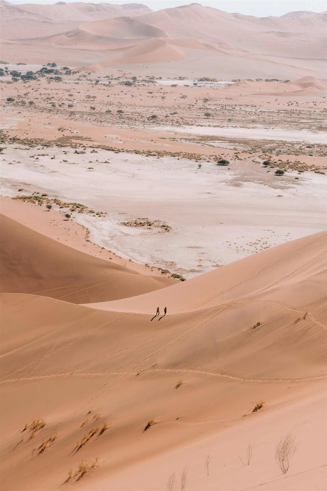
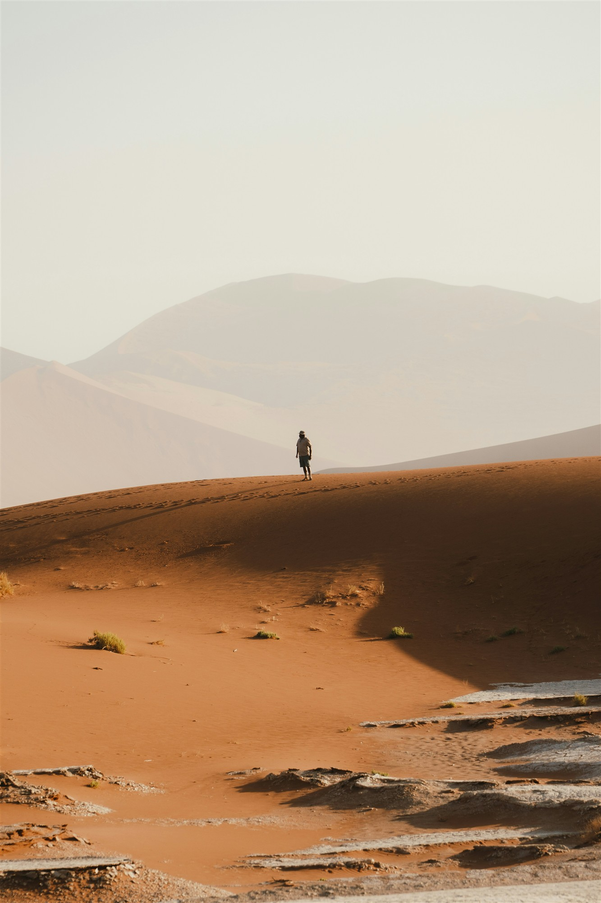
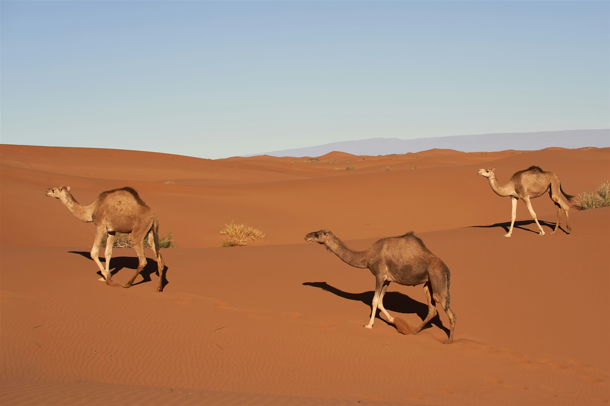
Wild Ochre
지나가는 것들을 멀리서 지켜본다
한낮의 열기가 꺾인 오후
모든 것이 같은 흙빛이라서
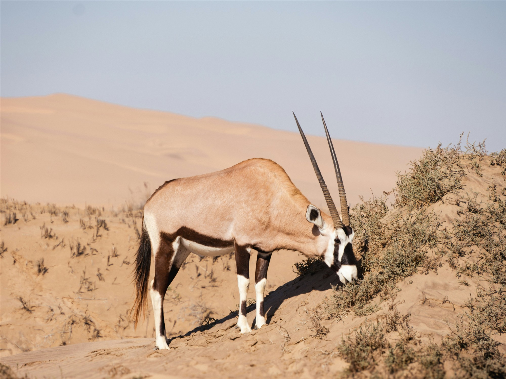
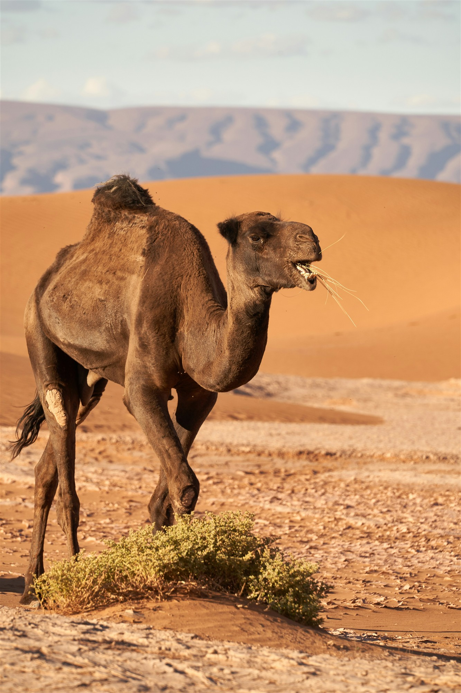
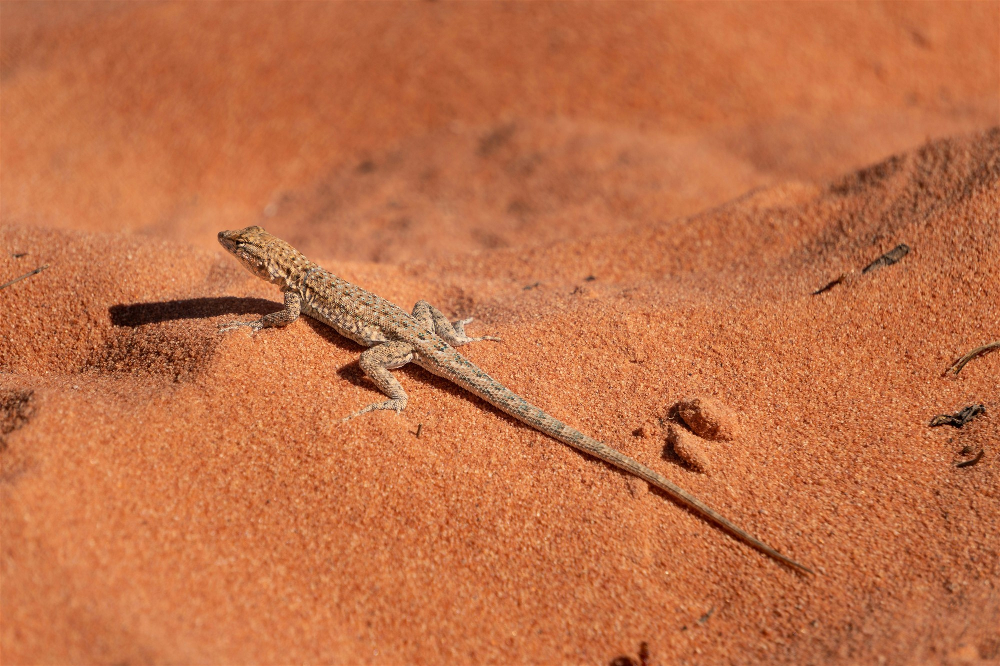
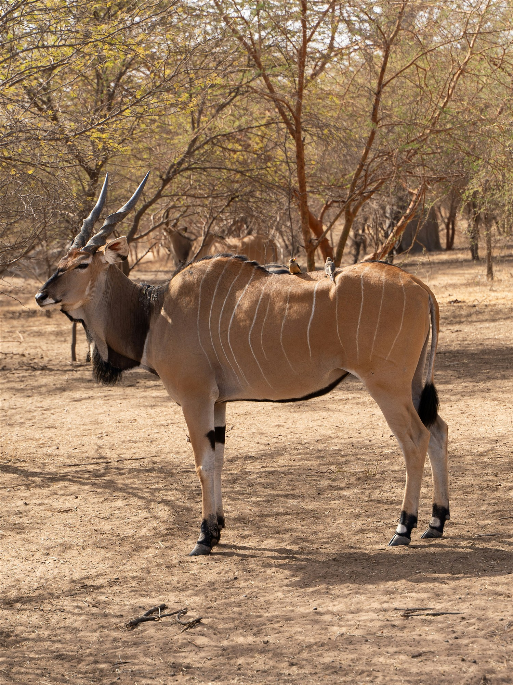
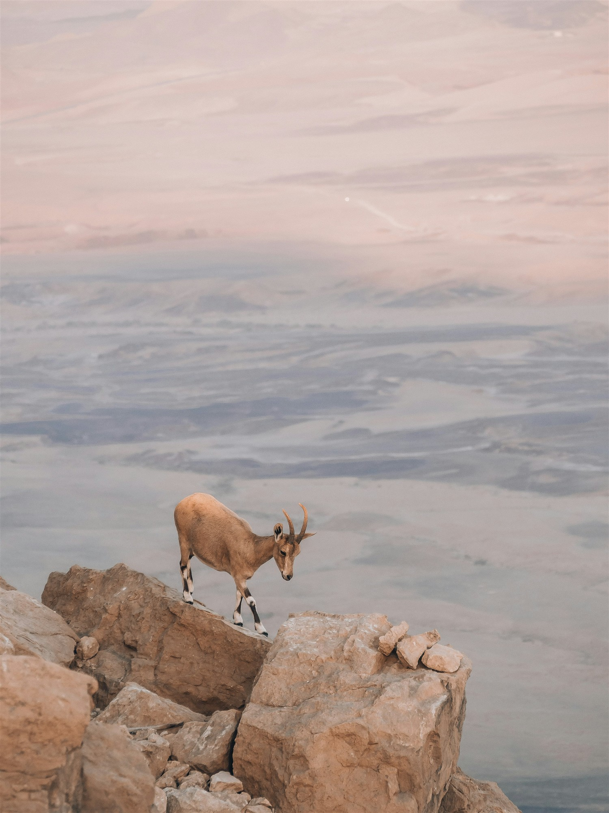
Wind Lines
나무 그늘에 앉아 바람의 결을 본다
바람이 모래에 새 줄을 그을 때
아무것도 남지 않는데 흔적은 남아서
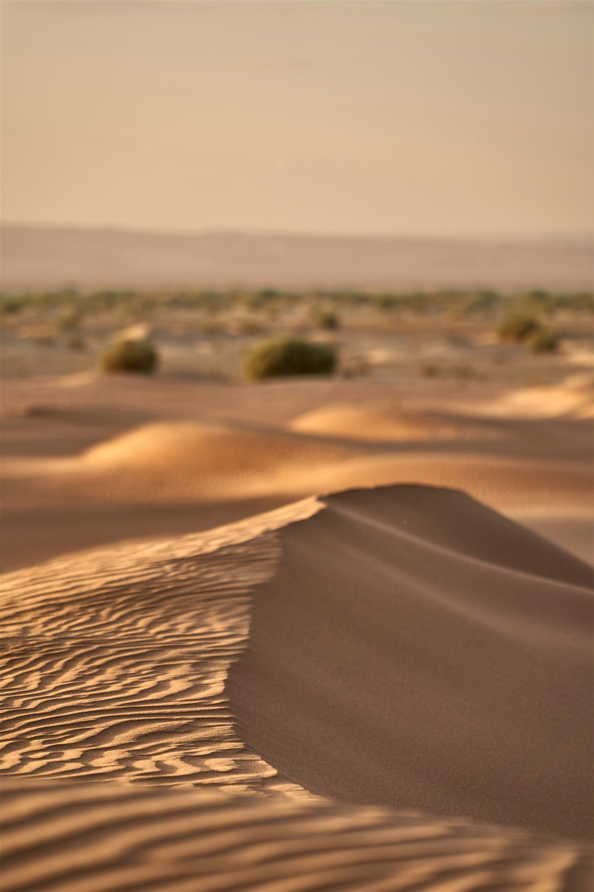
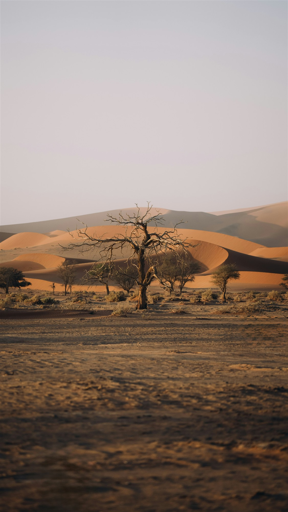
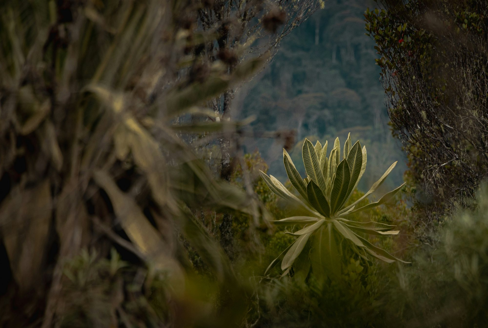